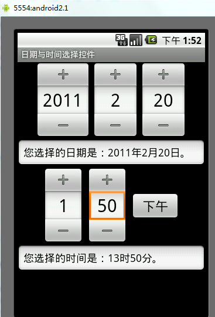
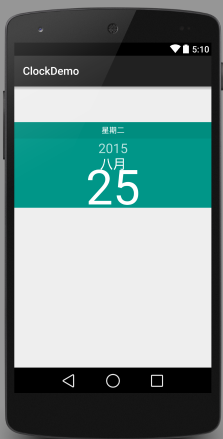
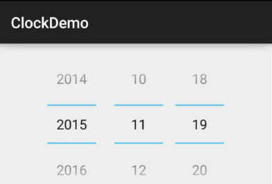
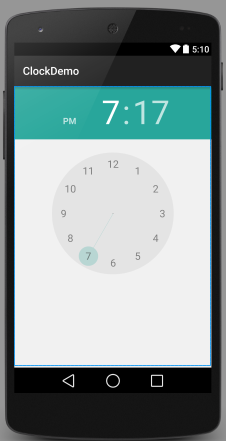
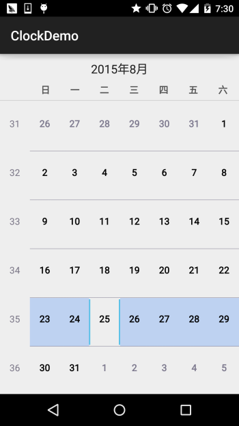

本節の導入：
本節では、Androidシステムが提供するいくつかのネイティブなDate & Timeコンポーネントについて引き続き学びます。それらはそれぞれ、DatePicker(日付選択器)、TimePicker(時刻選択器)、CalendarView(カレンダービュー)です。まあ、実は最初にこれらを扱うのは拒否していました。なぜなら、私の印象では、こんな感じだったからです：

まったく、醜すぎて泣けてくるよ、そう思わない？ついに、なぜこんなに多くの人がこのタイプのコントロールをカスタマイズするのか分かった！しかし、やはりアウトラインに書いてある以上、自分で書いたアウトラインは、涙を呑んで書き終えなければならない...DatePickerをレイアウトに書き込んで、プレビュー画像を見てみると、おや：

なるほど、見た目はなかなか良いじゃないか、気分も最高だ、はは、では本節の内容を始めよう！
1.DatePicker(日付選択器)
私たちが使用できる属性は以下のとおりです：
- android:calendarTextColor：カレンダーリストのテキストの色
- android:calendarViewShown：カレンダービューを表示するかどうか
- android:datePickerMode：コンポーネントの外観、選択可能な値：spinner、calendar 前者の効果は以下の通り、デフォルトは後者です

- android:dayOfWeekBackground：上部の曜日の背景色
- android:dayOfWeekTextAppearance：上部の曜日の文字色
- android:endYear：前年(内容) 例：2010
- android:firstDayOfWeek：カレンダーリストを何曜日から始めるかを設定
- android:headerBackground：ヘッダー全体の背景色
- android:headerDayOfMonthTextAppearance：ヘッダーの日付フォントの色
- android:headerMonthTextAppearance：ヘッダーの月フォントの色
- android:headerYearTextAppearance：ヘッダーの年のフォントの色
- android:maxDate：最大日付をこのカレンダービューにmm / dd / yyyy形式で表示
- android:minDate：最小日付をこのカレンダービューにmm / dd / yyyy形式で表示
- android:spinnersShown：スピナーを表示するかどうか
- android:startYear：最初の年(内容)を設定、例：19940年
- android:yearListItemTextAppearance：リストのテキストがリストに表示されます。
- android:yearListSelectorColor：年リスト選択時の色
属性は上記のとおりです。好きなように使ってください。次に、DatePickerのイベントについて説明します：DatePicker.OnDateChangedListenerまた、不思議なことに、上記のようなmodeがcalendarの場合、イベントを設定しても応答しません。上記のような場合は、選択後に値を取得するしかないようです。modeがspinnerであれば、以下のコードでイベントリスニングを実現できます：
実装コードは以下のとおりです：
public class MainActivity extends AppCompatActivity implements DatePicker.OnDateChangedListener{
@Override
protected void onCreate(Bundle savedInstanceState) {
super.onCreate(savedInstanceState);
setContentView(R.layout.activity_main);
DatePicker dp_test = (DatePicker) findViewById(R.id.dp_test);
Calendar calendar = Calendar.getInstance();
int year=calendar.get(Calendar.YEAR);
int monthOfYear=calendar.get(Calendar.MONTH);
int dayOfMonth=calendar.get(Calendar.DAY_OF_MONTH);
dp_test.init(year,monthOfYear,dayOfMonth,this);
}
@Override
public void onDateChanged(DatePicker view, int year, int monthOfYear, int dayOfMonth) {
Toast.makeText(MainActivity.this,"您选择的日期是："+year+"年"+(monthOfYear+1)+"月"+dayOfMonth+"日!",Toast.LENGTH_SHORT).show();
}
}
実行結果図：

2.TimePicker(時刻選択器)
まず5.0のTimePickerがどんな見た目か見てみましょう：

見た目はなかなか良いですね。公式が提供している属性は一つだけだと分かりました：android:timePickerMode：コンポーネントの外観、同様に選択可能な値：spinnerとclock(デフォルト) 前者は旧バージョンのTimePickerです~ そして、これに対応するリスニングイベントは：TimePicker.OnTimeChangedListener
以下にコード例を示します：
public class MainActivity extends AppCompatActivity{
@Override
protected void onCreate(Bundle savedInstanceState) {
super.onCreate(savedInstanceState);
setContentView(R.layout.activity_main);
TimePicker tp_test = (TimePicker) findViewById(R.id.tp_test);
tp_test.setOnTimeChangedListener(new TimePicker.OnTimeChangedListener() {
@Override
public void onTimeChanged(TimePicker view, int hourOfDay, int minute) {
Toast.makeText(MainActivity.this,"您选择的时间是："+hourOfDay+"时"+minute+"分!",Toast.LENGTH_SHORT).show();
}
});
}
}
実行結果図：残念ながら、このイベントをトリガーするには同じく旧バージョンのTimePickerが必要です！

3.CalendarView(カレンダービュー)
では、同じくまず見た目を見てみましょう：

うーん、あまり変わっていないようです。次に、ドキュメントで提供されている属性を簡単に見てみましょう：
- android:firstDayOfWeek：1週間の最初の日を設定
- android:maxDate：最大の日付をこのカレンダービューにmm / dd / yyyy形式で表示
- android:minDate：最小の日付をこのカレンダービューにmm / dd / yyyy形式で表示
- android:weekDayTextAppearance：平日のテキストがカレンダーのタイトルに省略形で表示されます
上記のほかにもありますが、すべて非推奨です... 対応する日付変更イベントは：CalendarView.OnDateChangeListener
サンプルコード：
public class MainActivity extends AppCompatActivity{
@Override
protected void onCreate(Bundle savedInstanceState) {
super.onCreate(savedInstanceState);
setContentView(R.layout.activity_main);
CalendarView cv_test = (CalendarView) findViewById(R.id.cv_test);
cv_test.setOnDateChangeListener(new CalendarView.OnDateChangeListener() {
@Override
public void onSelectedDayChange(CalendarView view, int year, int month, int dayOfMonth) {
Toast.makeText(MainActivity.this,"您选择的时间是："+ year + "年" + month + "月" + dayOfMonth + "日",Toast.LENGTH_SHORT).show();
}
});
}
}
実行結果図：

本節のまとめ：
では、これらの3つのコントロールの紹介はここまでです。実際の開発では、これらのコントロールは通常カスタムします。アドバンストシリーズでは、自分でコントロールを書く予定です。お楽しみに、ありがとうございます~